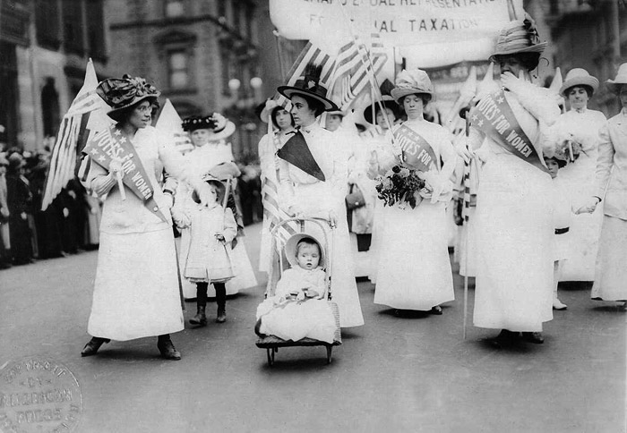

Library Orientation Guide:
History of American Women
General Research Tools in the LBCC LAC Library
Examples from the LAC Reference Room Collection
HQ1410 .H36 2000
Handbook of American women's history / Angela M. Howard & Frances M. Kavenik, editors
HQ1410 .L86 1994 What every American should know about women's history : 200 events that shaped our destiny / Christine Lunardini
HQ1121 .J634 2000
1001 things everyone should know about women's history /
Constance Jones
HQ1121 .G74 1994 The timetables of women's history : a chronology of the
most important people and events in women's history /
Karen Greenspan
HQ1121 .O47 1994 Chronology of women's history / Kirstin Olsen
Examples from the LAC Biography Reference Collection
CT3260 .N573 1980b Notable American women : the modern period : a biographical dictionary / edited by Barbara Sicherman
E185.96 .N68 2003 Notable Black American women : book III / Jessie Carney Smith, editor
CT3260 .N57 Notable American women, 1607-1950; a biographical dictionary / Edward T. James, editor
T36 .Z54 2000 American women in technology : an encyclopedia / Linda Zierdt-Warshaw, Alan Winkler, and Leonard Bernstein
Q141 .B25 1994 American women in science : a biographical dictionary / Martha J. Bailey
Books in the LAC Library to Check Out
For general books about American Women, browse the shelves at call numbers, HQ1100 - HQ2030, especially around the HQ1121's and the HQ1400's, and E184 - E185 for African American Women.
How to Search the Online Catalog, Voyager
Books can be located by searching Voyager, the Library's online catalog. A link to the catalog is found from the Library's Web Page under the Books category. Use terms such as american and women in a keyword search for the best results. You can then follow subject heading links in desired records to find more similar records. You can use the Quick Limit of LAC Library to exclude electronic books and books at the PCC Library. For tips on searching strategies in Voyager the http://voyager.lbcc.edu/help/combinedsearch.htm link will give you help, and for advanced searching you can look at http://voyager.lbcc.edu/help/buildersearch.htm for advanced search tips.
How to Search Voyager or NetLibrary for Full-Text E-Books Online
To find Electronic books in Voyager which can be read online from home, try a keyword search using general terms and adding a Quick Limit of E-Books. You will need to view the record for the book you want to read in the online catalog, then click on the resource link to the website that hosts the book. To view from home you will need passwords to read the book which can be found with the passwords for online databases available from the librarians. Alternately, you can go directly to NetLibrary.com and perform a search there for author, title or keywords.
How to Find Scholarly Articles from Online Databases
The Library has a subscription to several online databases containing information on research on American History. These databases are particularly helpful in finding information as many journals can be searched simultaneously by the keywords you select. The full-text is then most often available online for printing or sending to your email account. Some of these databases include:
| CQ Researcher Encyclopaedia Britannica Facts.com Facts on File On-Line Opposing Viewpoints ProQuest (including GenderWatch) SIRS Databases |
 Women's Suffrage March, NYC 1912 |
How to Find Scholarly Articles from Online Databases
A good site to begin a topical search for reliable internet resources is: Librarian's Index to the Internet, or http://lii.org/. Try a search of the keywords: american women history.
Other helpful sites include:
Women's History Resources: http://www.library.wisc.edu/libraries/womensstudies/hist.htm
Library of Congress Women's History
Collections: http://memory.loc.gov/ammem/browse/ListSome.php?category=Women's%20History
also: http://lcweb2.loc.gov/ammem/awhhtml/
Women in American History by Encyclopedia Britannica: http://search.eb.com/women/
|
Writing Papers: Online Links |
compiled by Paula I Nielson, PhD |